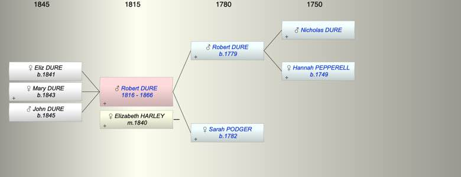

| [Index] |
| Robert DURE (1816 - 1866) |
|  |
| b. 1816 at Langport |
| m. 09 Apr 1840 Elizabeth HARLEY at South Pool, Devon |
| d. 16 Jun 1866 at Coleridge, Devon aged 50 |
| Near Relatives of Robert DURE (1816 - 1866) | ||||||
| Relationship | Person | Born | Birth Place | Died | Death Place | Age |
| Grandfather | Nicholas DURE | |||||
| Grandmother | Hannah PEPPERELL | 1749 | Slapton | |||
| Father in Law | Aquila HARLEY | |||||
| Father | Robert Pepperell DURE | 1779 | Stokenham, Devon | |||
| Mother | Sarah PODGER | 1782 | Langport, Somerset | |||
| Self | Robert DURE | 1816 | Langport | 16 Jun 1866 | Coleridge, Devon | 50 |
| Wife | Elizabeth HARLEY | |||||
| Daughter | Eliz DURE | 1841 | South Pool, Devon | |||
| Daughter | Mary Grace Hurley DURE | 1843 | Stokenham | |||
| Son | John Harley DURE | 1845 | Stokenham | |||
| Sister | Susan DURE | abt 1812 | 1891 | Plympton St Mary | 79 | |
| Brother | William DURE | 1816 | ||||
| Son in Law | John SAMSON | |||||
| Nephew | Robert H HAMMETT | 1838 | Stokenham | |||
| Niece | Sarah Agnes HAMMETT | 1841 | Plymton | 1880 | 39 | |
| Nephew | Stephen HAMMETT | 16 Jun 1845 | Plympton St Mary | 29 Apr 1915 | Plymouth | 69 |
| Brother in Law | Nicholas John HAMMETT | 1812 | Plymouth | 1873 | Plympton St Mary | 61 |
| Events in Robert DURE (1816 - 1866)'s life | |||||
| Date | Age | Event | Place | Notes | Src |
| 1816 | Robert DURE was born | Langport | ex 1851 census | ||
| 09 Apr 1840 | 24 | Married Elizabeth HARLEY | South Pool, Devon | ||
| 1841 | 25 | Birth of daughter Eliz DURE | South Pool, Devon | ||
| 1843 | 27 | Birth of daughter Mary Grace Hurley DURE | Stokenham | ex Census | |
| 1845 | 29 | Birth of son John Harley DURE | Stokenham | bap 18 May 1845 | |
| 16 Jun 1866 | 50 | Robert DURE died | Coleridge, Devon | Note 1 | |
| Death of father Robert Pepperell DURE | Note 2 | ||||
| Note 1: ex Probate granted (in 1878) to his daughter Mary Grace Samson wife of John SAmson |
| Note 2: Reg 1864 Kingsbidge fits no age given |
| Created on a Mac™ using iFamily for Mac™ on 15 Sep 2023 |